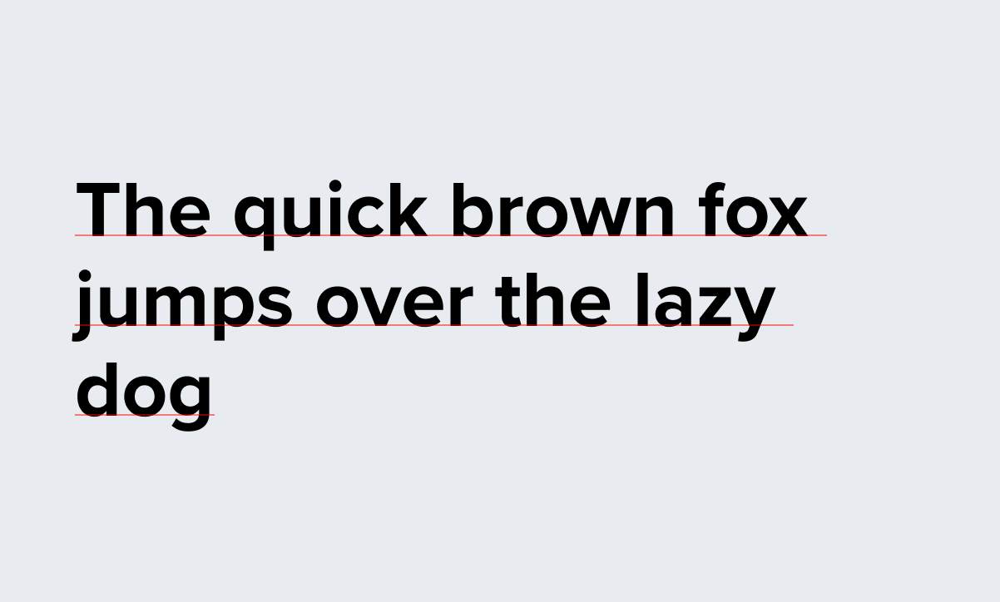

# Banner Framework A presentation from [Mike Stezycki](https://stez.me).
## ⛰ Background Over the year we've shown we can reliably move people around the site using bespoke banners and sticky buttons.
## 🌋 The Problem 🐢 Iteration is slow 🕒 Outdated creative 🎨 Often bespoke designs 🚢 Shipping to UA is hard 🗑 We lose components when tests are deleted
## 😍 What we need A **flexible** and **robust** design framework to decide how promotions look and that can be changed easily.
## ☝️ What we've done Grouped banners into categories, broken down into parts, added constraints and stress tested the parts. We've then identified what works and what doesn't.
## 🛠 Still to do We've limited the scope to two banners but need to explore more options and more component combinations.
## Two Banner Categories * Single action banner * Multi action banner
## Single Action Banner Break-down Normally includes: * Media * Title * CTA Could also include: * Description * Form.
## Banner Footprint <video muted controls> <source data-src="/mov/20191112-banner_framework_animation.mp4" type="video/mp4"> Sorry, your browser doesn't support embedded videos. </video>
## Constraints * Grid (12 columns) * Font family (Proxima Nova) * Font color (Woodsmoke)
## Variables * Font size (from our type scale) * BG colors (from our pool of colors) * Margin/Padding (from our spacing scale) * Layout rules (building blocks) * Components inside the banner
## Media When to use spot illustrations vs large illustrations vs a photo.
## Text  How large are titles and descriptions? Do we limit to 30 characters per line? When does the design break due to overflowing text?
## Forms <video muted loop autoplay controls> <source data-src="/mov/form-stack.mov" type="video/mp4"> Sorry, your browser doesn't support embedded videos. </video> When do form inputs and buttons stack? Do they fill out the space they need or all space that's available?
## Spacing Scale We need a spacing scale to help pad elements out to give them breathing room
## What Looks Good? We built a tool to help us generate loads of combinations and we picked what looked best based on our rationale
## What Looks Bad? We deliberately picked bad examples to showcase what **not to do**
## Our Rationale Based on years of experience as a designer laying out pages in print and digital websites and apps including typesetting, picking colours based on emotions they envoke etc.